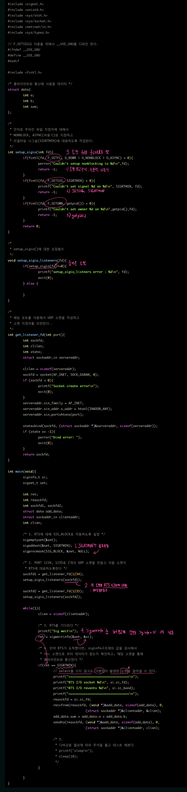

Signal <2> RTS
POSIX RTS
RTS
- RTS: 비동기(asynchronous) 이벤트를 전달하기 위한 목적, 실시간성 유지하며 대기열부재 문제를 해결.
- polling에 비해 월등한 성능 향상
- select, poll과 같은 I/O 방식은 메시지가 도착하기를 계속 체크방식
- poll은 이벤트를 받기 위해 커널 스페이스 -> 유저스페이스로 이벤트를 복사한다.
- 업데이트된 이벤트 리스트를 유저스페이스 -> 커널스페이스로 다시 복사
- 즉, 하나의 이벤트를 전달받기 위해 2번의 복사가 일어난다.
- polling에 비해 월등한 성능 향상
- UNIX 표준 시그널은 시그널 발생 시, 단지 시그널 전달 사실+ 시그널 번호만 알 수 있다.
- 표준 시그널은 시그널의 대기열 유지 불가, 시그널 핸들러가 리턴되기 전에 여러 개의 동일한 시그널이 전달되면 그 중 하나의 시그널만 전달될 뿐이며 나머지 시그널은 잃어 버린다.
- RTS는 구조체에 시그널 관련 여러 정보 포함해 전달
- RTS는 시그널 대기열 유지 가능하여, 동시에 여러 시그널이 전달되어도 대기열에 담아둘 수 있다.
- struct siginfo는 sigaction 구조체 내 sa_sigaction에서 사용된다.
typedef struct siginfo{
int si_signo; /* Signal number */
int si_errno; /* Error code */
int si_code;
pid_t si_pid;
uid_t si_uid;
void *si_addr;
union sigval si_value;
union {
/* Skipping other fields */
struct {
int _band; /* Socket event flags (similar to poll) */
int _fd; /* Socket fd where event occurred */
} _sigpoll;
} _sifields;
} siginfo_t;
#define si_fd _sifields._sigpoll._fd
- 위 구조체를 보면 시그널 번호, 어떤 소켓에서 이벤트를 발생시켰는지 등의 정보를 포함한다.
| struct siginfo_t의 멤버 | description |
| si_signo | 시그널 번호 |
| si_errno | errno 값 |
| si_code | 시그널을 받았을 때 어떤 이유로 시그널이 발생했는지 관련된 값 SI_ASYNCIO: 소켓으로 비동기 입출력 이벤트 발생 SI_QUEUE: sigqueue()함수를 통한 시그널 발생 SI_TIMER: 시간 초과 SI_USER: kill()함수 등에 의한 시그널 발생 |
| si_pid | 시그널을 발생시킨 PID |
| si_uid | 시그널을 발생시킨 프로세스의 UID로, si_code가 SI_USER일 경우에만 값이 설정된다. |
| si_status | 자식 프로세스에서 SIGCHLD시그널이 발생시키고 종료했을 경우 자식 프로세스의 종료 값 |
| si_value | sigqueue()함수를 이용해서 시그널을 발생시킬 경우 사용자가 보낸 값이 저장된다. |
| si_addr | 메모리 참조주소의 포인터를 포함. 이것은 SIGSEGV, SIGBUS, SIGILL, SIGFPE 등이 발생했을 때만 적용된다. |
| si_fd | 이벤트를 발생시킨 file discriptor |
typedef union sigval{
int sival_int;
void *sival_ptr;
} sigval_t;
RTS 지원 확인
- kill -l 커맨드로 확인한다.
- 1~31: UNIX 표준 시그널
- 32~63: RTS를 위해 예약된 영역, 이 중 하나를 사용하면된다.
[root@joinc /root]# kill -l 1) SIGHUP 2) SIGINT 3) SIGQUIT 4) SIGILL 5) SIGTRAP 6) SIGABRT 7) SIGBUS 8) SIGFPE 9) SIGKILL 10) SIGUSR1 11) SIGSEGV 12) SIGUSR2 13) SIGPIPE 14) SIGALRM 15) SIGTERM 17) SIGCHLD 18) SIGCONT 19) SIGSTOP 20) SIGTSTP 21) SIGTTIN 22) SIGTTOU 23) SIGURG 24) SIGXCPU 25) SIGXFSZ 26) SIGVTALRM 27) SIGPROF 28) SIGWINCH 29) SIGIO 30) SIGPWR 31) SIGSYS 32) SIGRTMIN 33) SIGRTMIN+1 34) SIGRTMIN+2 35) SIGRTMIN+3 36) SIGRTMIN+4 37) SIGRTMIN+5 38) SIGRTMIN+6 39) SIGRTMIN+7 40) SIGRTMIN+8 41) SIGRTMIN+9 42) SIGRTMIN+10 43) SIGRTMIN+11 44) SIGRTMIN+12 45) SIGRTMIN+13 46) SIGRTMIN+14 47) SIGRTMIN+15 48) SIGRTMAX-15 49) SIGRTMAX-14 50) SIGRTMAX-13 51) SIGRTMAX-12 52) SIGRTMAX-11 53) SIGRTMAX-10 54) SIGRTMAX-9 55) SIGRTMAX-8 56) SIGRTMAX-7 57) SIGRTMAX-6 58) SIGRTMAX-5 59) SIGRTMAX-4 60) SIGRTMAX-3 61) SIGRTMAX-2 62) SIGRTMAX-1 63) SIGRTMAX
RTS를 통한 네트워크 I/O 처리
RTS API
- select없이 소켓에 이벤트 시그널이 발생한 것 어떻게 아는가?
- 소켓파일이 RTS에 반응하도록 한다.
- fcntl()을 사용한다.
- 해당 소켓을 논 블럭+비동기로 셋팅
- 시그널 번호 >= SIGRTMIN (SIGRTMIN 부터 RTS 시그널 가능)
int sockfd = accept(...); "소켓을 논블럭, 비동기로 설정한다." fcntl(sockfd, F_SETFL, O_RDWR | O_NONBLOCK | O_ASYNC); "SIGRTMIN보다 더 큰 RTS시그널이 전달되도록 한다." fcntl(sockfd, F_SETSIG, SIGRTMIN); "시그널을 보낼 프로세스 ID를 설정한다. 여기서는 자기 프로세스로 보내도록 했다." fcntl(sockfd, F_SETOWN, getpid()); fcntl(sockfd, F_SETAUXFL, O_ONESIGFD);
- fcntl()을 사용한다.
- 위 설정으로 소켓 fd는 SIGRTMIN 이벤트 감지 가능
- 이제, 소켓에 RTS가 통지되었을 때 필요한 작업을 하도록 코드를 추가
- RTS가 통지되었는지 확인하는 함수가 필요하다.
- UNIX는 sigwaitinfo()와 sigtimedwait()함수를 제공하며, 이 함수들로 RTS통지 확인
#include <signal.h> int sigwaitinfo(const sigset_t *set, siginfo_t *info); int sigtimedwait(const sigset_t *set, siginfo_t *info, const struct timespec *timeout); int sigqueue(pid_t pid, int sig, const union sigval value);- set은 기다릴 시그널 정보가 설정되는 구조체
- set에 설정한 시그널이 통지되면 해당 정보가 info에 복사된다.
- sigtimewait()는 기다리는 시간을 설정할 수 있다는 점을 제외하고는 sigwaitinfo()와 완전 동일
- 사용법은 아래 UDP에서 RTS 블록으로 정보 얻기 참고
- kill()이 시그널을 보내는 것 처럼, RTS Signal도 다른 프로세스로 시그널을 보낼 수 있는데 바로
sigqueue()이다.
UDP에서 RTS 블록으로 정보 얻기

- sigaddset()을 이용해서 RTS를 대응하도록 설정.
sigprocmask()을 이용해서 동일한 RTS가 들어왔을 때, 인터럽트가 걸리지 않고 블럭되도록 설정한다.- 만약 sigprocmask()를 사용해서 RTS를 블럭하지 않는다면 sigwaitinfo()가 호출되어 RTS를 기다리기 전에 RTS가 프로세스로 전달될 경우 프로세스에 인터럽트가 걸리고 프로세스는 종료되어 버릴 것이다.
- 소켓 fd를 fcntl()을 이용해 RTS에 대응하도록 만든다.
- sigwaitinfo()를 통해 RTS를 기다린다.
소켓에 이벤트발생 시, RTS가 전달 되고, sigwaitinfo()는 리턴한다. 리턴 시, siginfo를 채워 이벤트 발생한 파일과 정보등을 담는다. - siginfo 정보를 이용해 어느 소켓, 어떤 이벤트 발생했는지 파악해 데이터 통신
프로세스간 신호 전달
sigqueue():2
- RTS는 파일에 대한 좋은 이벤트 전달 도구 이기도 하지만, 프로세스간 신호 전달 목적으로도 사용가능하다.
- 장점: 시그널이 대기열에 쌓이므로 잃어버릴 염려 없다. 부가적인 정보 전달 가능하다.
- sigqueue(): 다른 프로세스로 RTS 전달
- sifinfo_t 구조체의 sigvalue로 부가적인 정보 전달
union sigval{ int sival_int; void *sival_ptr; }- sival_int는 int형 값 전달 위해 사용
- *sival_ptr는 주소값을 전달하기 위해 사용한다고 되어 있는데, 실제 어디에 사용가능한지 확인 할 수 없다.
- sigaction의 sa_falgs를 SA_SIGINFO로 sigaction 참고설정하고 적당한 시그널 핸들러를 등록하기만 하면된다.
그리고 RTS가 전달되었을 경우 si_code가 SI_QUEUE인지를 확인하고 원하는 작업을 하면 된다.- 확인하는 이유는 RTS가 아닌 표준 시그널이 도착할 수 있고, 이를 구별해서 작업해야할 필요가 있기 때문이다.
RTS 반응 App 예제
rcv_rts.c
snd_rts.c
RTS 대기열의 크기에 따른 문제
- RTS 대기열의 크기는 무한하지 않다.
- 대기열이 다차지않게 해야한다.
- RTS 대기열은 프로세스 단위로 유지된다.
- 클라이언트의 데이터량을 계산해서 RTS+스레드, RTS+fork의 식으로 서버를 작성하라(스레드/프로세스 풀 사용).
- RTS 대기열 Overflow
- Overflow가 발생할 수 있다.
- RTS overflow 발생 시, 프로세스로 SIGIO 시그널이 전달된다.
- SIGIO 시그널 핸들러를 등록해 이벤트 발생시 복구 작업
- 모든 소켓에 대한 RTS대응을 하지 않도록 설정
- 모든 시그널 대기열로 부터 모든 시그널을 제거
- 잃어버린 소켓 이벤트를 복구
- Overflow가 발생할 수 있다.
- 시그널 대기열에 있는 소켓 fd 당 하나의 이벤트만 허용하도록 커널 수정
- fcntl을 사용하여 하나의 소켓당 하나의 이벤트가 대기열에 들어가도록 조작
- fcntl(sockfd, F_SETAUXFL, O_ONESIGFD);
- fcntl을 사용하여 하나의 소켓당 하나의 이벤트가 대기열에 들어가도록 조작